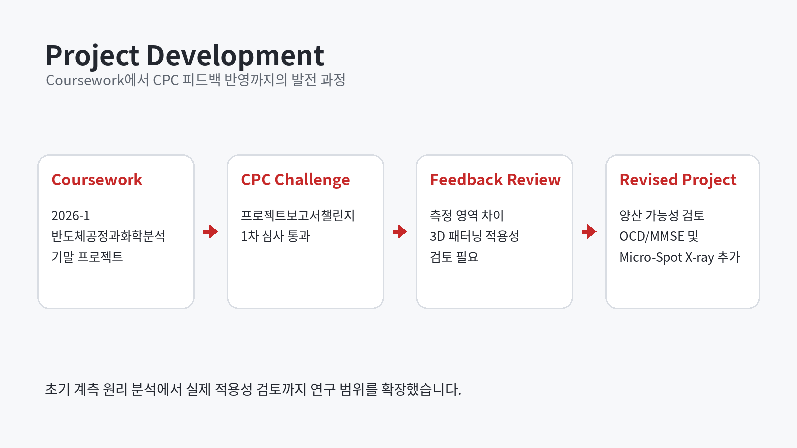
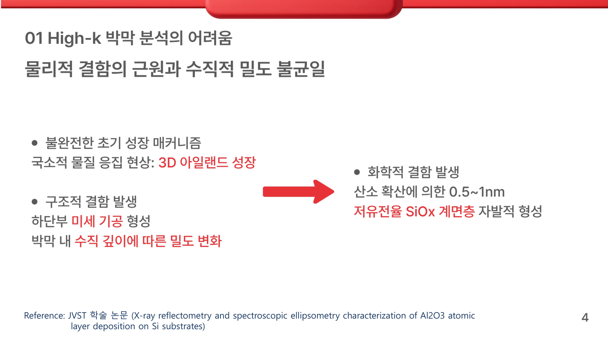
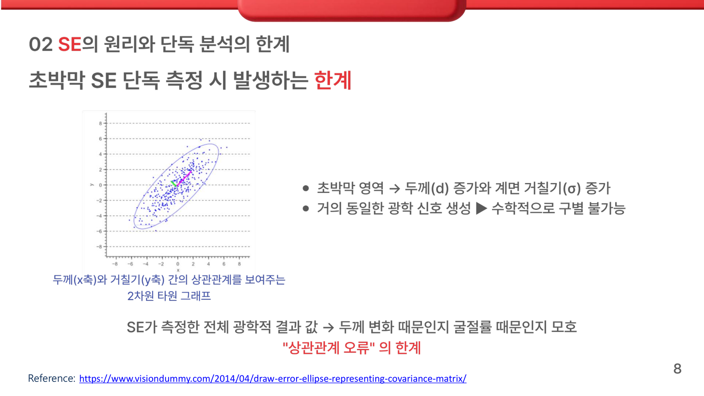
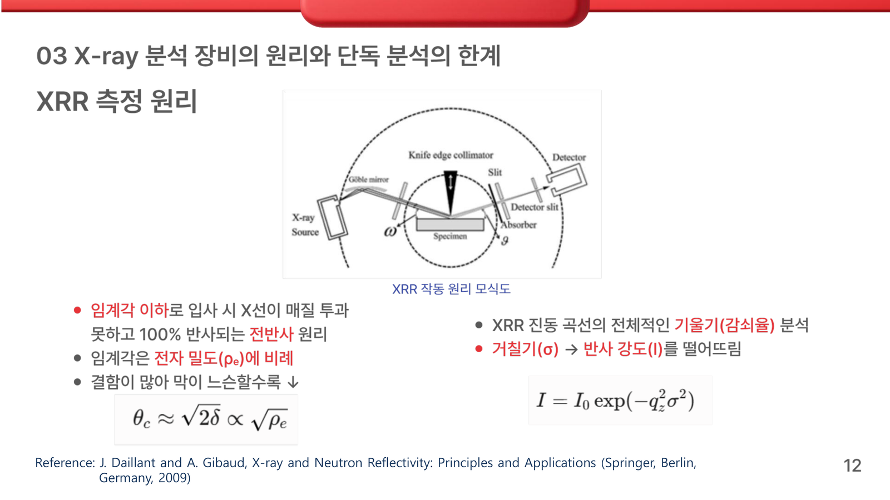
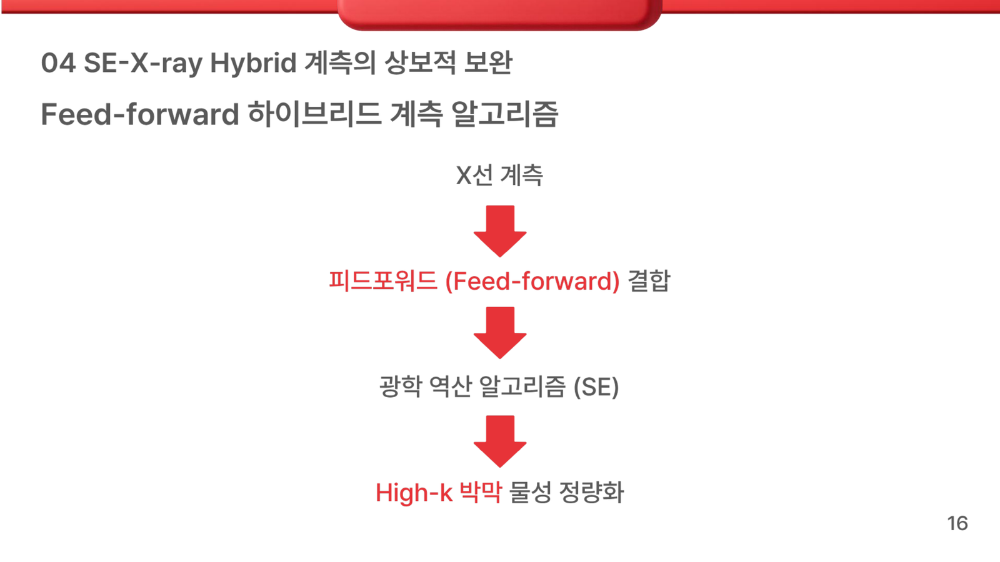

Project development flow
CPC는 프로젝트 발전 과정의 한 단계이며, 결과는 프로젝트보고서챌린지 1차 심사 통과입니다.
ALD High-k thin-film density and interface-roughness quantification
ALD 기반 High-k 초박막에서 SE 단독 역모델링으로 발생할 수 있는 두께·광학상수·밀도·계면 거칠기 간 모호성을 분석하고, XRR 중심의 X-ray 구조정보를 SE 모델의 제약조건으로 결합하는 Hybrid Metrology 전략을 조사한 문헌 기반 프로젝트입니다.
01 / PROJECT DEVELOPMENT
수업 기말 프로젝트에서 단독 계측의 한계를 조사한 뒤, CPC 1차 심사와 외부 피드백을 거쳐 3D 패턴·측정 영역 문제를 추가하고 학회 발표 흐름으로 발전시켰습니다.

CPC는 프로젝트 발전 과정의 한 단계이며, 결과는 프로젝트보고서챌린지 1차 심사 통과입니다.
반도체공정과화학분석 수업의 기말 프로젝트로 시작했습니다.
SE와 X-ray 계측의 원리 및 단독 분석 한계를 조사했습니다.
X-ray 구조정보를 SE 모델의 제약조건으로 활용하는 초기 전략을 수립했습니다.
CPC 프로젝트보고서챌린지 1차 심사를 통과했습니다.
측정 영역과 3D 패턴 적용 가능성에 대한 피드백을 검토했습니다.
OCD/MMSE와 Micro-Spot X-ray 적용 방안을 조사했습니다.
수정된 프로젝트 흐름을 특별세션에서 공동 발표했습니다.
This project was presented at the 2026 ISE Summer Conference.
View the presentation experience and conference feedback.
02 / METROLOGY CHALLENGE
ALD 초기 성장에서는 국소적인 아일랜드 성장과 미세 기공, 수직 밀도 구배, High-k와 기판 사이의 계면층이 함께 나타날 수 있습니다. 초박막에서는 thickness, n·k, density, roughness 변화가 서로 유사한 측정 응답을 만들 수 있어 하나의 낮은 MSE가 유일한 물리적 해를 보장하지 않습니다.

초기 성장과 계면층을 단순한 하나의 평면 경계로만 모델링할 때 발생할 수 있는 구조적 모호성을 정리했습니다.
두께·광학상수·밀도·거칠기 변화가 서로 보상하면 비슷한 광학 응답을 만들 수 있습니다.
수학적 fitting 오차가 낮아도 실제 박막 구조와 가장 가까운 해라고 단정할 수 없습니다.
03 / STANDALONE SE
SE는 측정한 Ψ와 Δ를 가상 optical model에 맞춰 두께와 n·k 등을 역추정합니다. 초박막에서는 광학적 위상 변화가 작아져 감도가 감소하고, 선택한 모델과 초기 조건에 따라 다른 구조가 유사한 결과를 만들 수 있습니다.

최적해가 한 점에 수렴하지 않고 길게 늘어진 confidence region으로 나타날 수 있는 이유를 분석했습니다.
04 / X-RAY METROLOGY
High-k 초박막에서는 XRR을 핵심 X-ray 계측법으로 다뤘습니다. 낮은 입사각에서 얻은 반사 강도의 특징을 통해 SE와 다른 물리 원리에 기반한 구조정보를 제공합니다.

Critical angle, Kiessig fringe, reflectivity decay가 각각 밀도·두께·거칠기 정보와 연결됩니다.
| XRR feature | Related information | Role in hybrid analysis |
|---|---|---|
| Critical angle | Electron density · film density | 밀도 파라미터의 구조 제약 후보 |
| Kiessig fringe | Thin-film thickness | 두께 초기값 또는 허용 범위 |
| Reflectivity decay | Surface · interface roughness | 거칠기 모델의 물리적 검토 |
| XRD / XRF literature | Crystal · composition information | 구조 제약의 확장 문헌 사례 |
05 / FEED-FORWARD STRATEGY
핵심 전략은 X-ray 계측에서 얻은 구조정보를 SE 모델의 초기값·고정값·허용 범위로 먼저 전달하는 것입니다. 자유 파라미터 수를 줄인 뒤 SE를 다시 fitting하고, 수학적 오차와 물리적 일관성을 함께 확인합니다.

독립 계측정보를 이용해 SE 역모델링의 파라미터 탐색 범위를 줄이는 의사결정 흐름입니다.
목표 구조와 시료에 맞는 X-ray 정보를 확보합니다.
두께·밀도·거칠기 등 독립 구조정보를 해석합니다.
구조정보를 고정값 또는 허용 범위로 변환합니다.
동시에 추정해야 하는 모델 변수의 수를 줄입니다.
제약된 모델로 Ψ·Δ 데이터를 다시 fitting합니다.
MSE와 X-ray 구조정보의 물리적 일관성을 함께 검토합니다.
06 / 3D & MANUFACTURING
Blanket wafer의 평면 다층 모델을 patterned wafer에 그대로 적용하기는 어렵습니다. SE와 X-ray의 spot size 및 측정 영역이 다를 수 있으므로 같은 위치·같은 구조를 대표하는지 먼저 확인해야 합니다.
3D 패턴에서는 높이·폭·sidewall angle을 포함하는 광학 형상 모델과 Mueller Matrix 기반 접근 가능성을 검토했습니다.
측정 영역 mismatch를 줄이기 위해 작은 X-ray beam으로 동일 패턴 영역을 비교하는 방안을 조사했습니다.
07 / LIMITATIONS
08 / FUTURE WORK
학회 질의응답을 바탕으로 계면 아래 기판과 인접층까지 연결된 다층 구조의 optical/X-ray response를 후속 분석 범위로 설정했습니다.
09 / RESOURCES
프로젝트 발전 과정과 계측 원리를 정리한 공개 README 및 원본 도식
VIEW SOURCE REPOSITORY ↗SE 한계, XRR 원리, 문헌 사례와 적용성 검토를 담은 23쪽 발표자료
VIEW PRESENTATION ↗특별세션 발표 현장, 질의응답과 피드백을 정리한 Experience 페이지
VIEW CONFERENCE EXPERIENCE →다른 공정·소자·데이터 분석 프로젝트가 포함된 포트폴리오 Projects 섹션
BACK TO PROJECTS ↑Code display: 이 사례는 계측 원리와 문헌 분석 중심 프로젝트이므로 별도 코드 섹션이 없습니다.